LAYERED OPTICS / IN DEVELOPMENT
Elyvris
Simulation and inverse design for layered optics.
I’m building a Python toolkit to calculate how light interacts with layered structures, then work back from a desired response. Inverse design is the next direction.
Reference model first · inverse design to follow
01 / ELYVRIS

Shape the result.LAYERS → RESPONSE → DESIGN